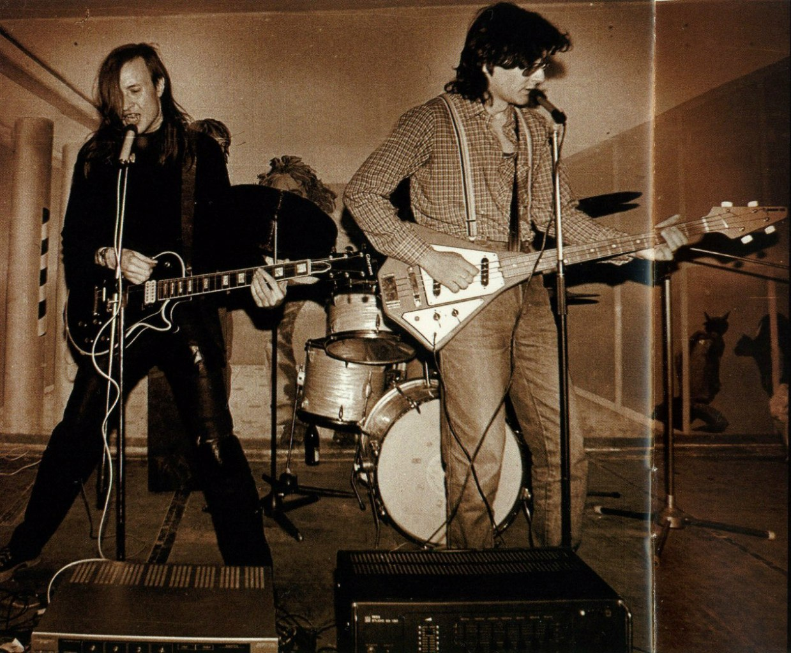

Оптимизм — второй официальный альбом группы «Гражданская оборона». Является по сути второй частью альбома «Поганая молодёжь», так как записан в то же время и при тех же условиях. Пересведён и переиздан наряду с другими альбомами в 2006 году на лейбле «Мистерия звука».
Гражданская оборона - Детский доктор сказал "Ништяк"
Записан в разных условиях с марта 1985 по май 1989 г. Материал весны — осени 1985 года.
1.«Я бесполезен» | Автор: Егор Летов, Константин Рябинов | Длительность 3:14.
2.«Я блюю на ваши дела» | Автор: Егор Летов, Константин Рябинов | Длительность 2:11.
3.«На наших глазах» | Автор: Егор Летов | Длительность 3:05.
4.«Кленовый лист» | Автор: Егор Летов | Длительность 2:08.
5.«Эй, бабища, блевани» | Автор: Егор Летов, Константин Рябинов | Длительность 2:57.
6.«Кто ищет смысл» | Автор: Егор Летов | Длительность 3:30.
7.«Собака» | Автор: Константин Рябинов | Длительность 3:55.
8.«Это не я» | Автор: Егор Летов, Константин Рябинов | Длительность 2:04.
9.«Оптимизм» | Автор: Егор Летов | Длительность 2:06.
10.«Детский доктор сказал "Ништяк"» | Автор: Егор Летов, Константин Рябинов | Длительность 4:12.
11.«Не надо» (Зоопарк № 2)| Автор: Егор Летов, Константин Рябинов | Длительность 0:36.

Информация с буклета:
Записано в Гроб-студии с 12 по 22 января 1988 года, кроме следующих композиций:
«На наших глазах» записана в июле 1985-го года в ДК «Звёздный» и в январе 1988 года в ГрОб-студии.
«Оптимизм» записана в августе 1986 у Евгения «Джеффа» Филатова.
«Не надо» и «Мама бля» записаны в июле 1985-го года в ДК «Звёздный»
«Без названия» записана в 1985 году.
Пересведено и реставрировано c 4 по 7 июля 2005 года Егором Летовым и Натальей Чумаковой.
Мастеринг — Наталья Чумакова.
Оформление — Егор Летов.